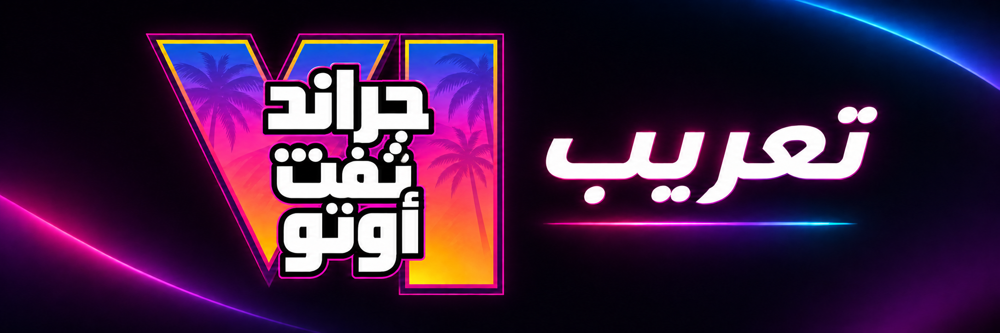

الدبلجة والأداء الصوتي
ElevenLabs v4
أو أقوى.

مشروع مجتمعي مفتوح المصدر
تعريبٌ عربيٌّ فصيحٌ للنصوص والدبلجة والصور، يُنجَز بالكامل بالذكاء الاصطناعي، من غير عمل بشري في الترجمة أو الأداء أو الرسم.
أن نوفر تعريبًا عربيًا فصيحًا متكاملًا لغراند ثيفت أوتو 6، يشمل النصوص والدبلجة والصور، ويُنجز بالكامل بالذكاء الاصطناعي وفق النماذج المعتمدة، ثم ننشر ترقيعًا وأدواتٍ مجانيةً مفتوحة المصدر تبلغ الإصدار 1.0 بعد صدور اللعبة، من غير أن نوزّع أيًّا من ملفات اللعبة الأصلية. يلزم اللاعبَ امتلاكُ نسخة قانونية.
لا تُقبل مساهمة أُنتجت بنموذج أضعف من الحد الأدنى، ولا عمل بشري مباشر في الترجمة أو الصوت أو الرسم.
الدبلجة والأداء الصوتي
أو أقوى.
الترجمة والنصوص
أو أقوى.
الصور والرسوم
من OpenAI أو أفضل.
المشاركة متاحة لكل أفراد المجتمع. اذكر اسم النموذج وإصداره في كل مساهمة.
شغّل أنابيب الترجمة والدبلجة والصور بالنماذج المعتمدة.
ابنِ أدوات الترقيع والمعاينة، من غير رفع ملفات اللعبة.
افتح قضية واشرح الخلل، بلا إرفاق أصول اللعبة.
هذا مشروع جماهيري غير رسمي، ولا صلة له بشركة Rockstar Games أو Take-Two Interactive، والعلامات التجارية ملكٌ لأصحابها. التعريب والدبلجة والكتابة والصور في هذا المشروع منتَجة كلها بالذكاء الاصطناعي. يقتصر التوزيع على الترقيعات والأدوات، ولا نوزّع ملفات اللعبة، ويلزم اللاعبَ امتلاكُ نسخة أصلية قانونية.